Sulawesi
Talaud and Sangihe down to Wakatobi.

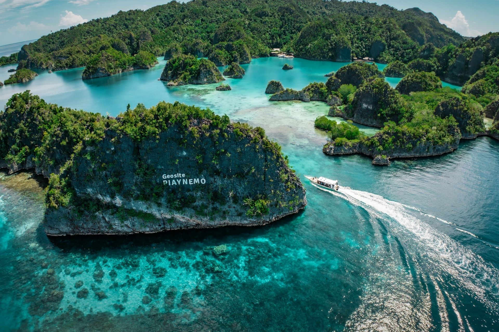
Sulawesi is a world of contrasts.
From volcanic shores and extraordinary macro life to coral reefs and open-water encounters, every part of the island reveals a different side of Indonesia.
Diving:
A submarine volcano you can dive, Lembeh muck, Gorontalo's sponge wall, Togian atolls and a shallow bomber, Banggai's endemic cardinalfish, and the clear water of Wakatobi.
Topside:
Tarsiers and black macaques at Tangkoko, Bajau stilt villages, Toraja highlands, phinisi boatyards.
What makes it different:
An island assembled from pieces of two continents, with a level of endemism found almost nowhere else, and the birthplace of the boat you are sailing on.
Seasons we are there:
March and April.
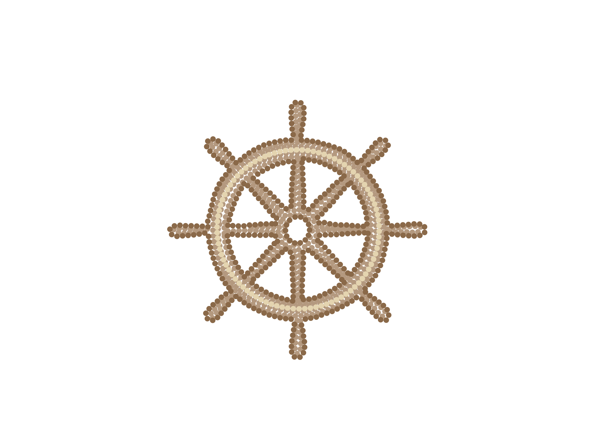
Key Infos
SUBREGIONS
Bunaken to Wakatobi.
Bunaken and the Lembeh Strait. The Gorontalo coast. The Togian islands. Banggai and the east coast. Wakatobi and Buton in the south.
book your stay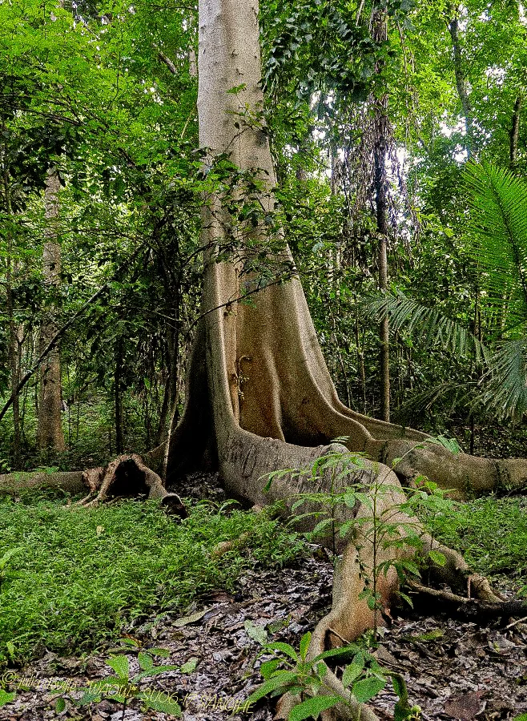
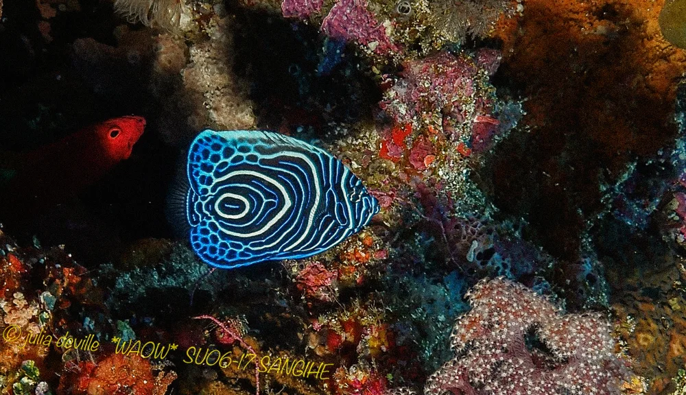
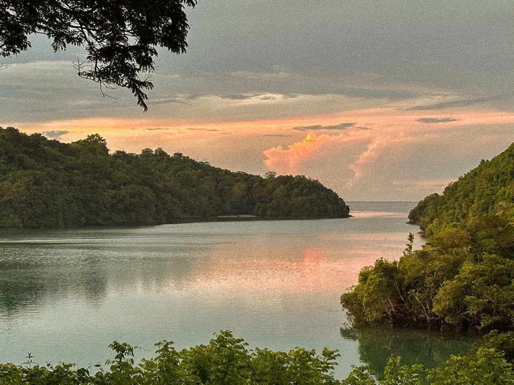
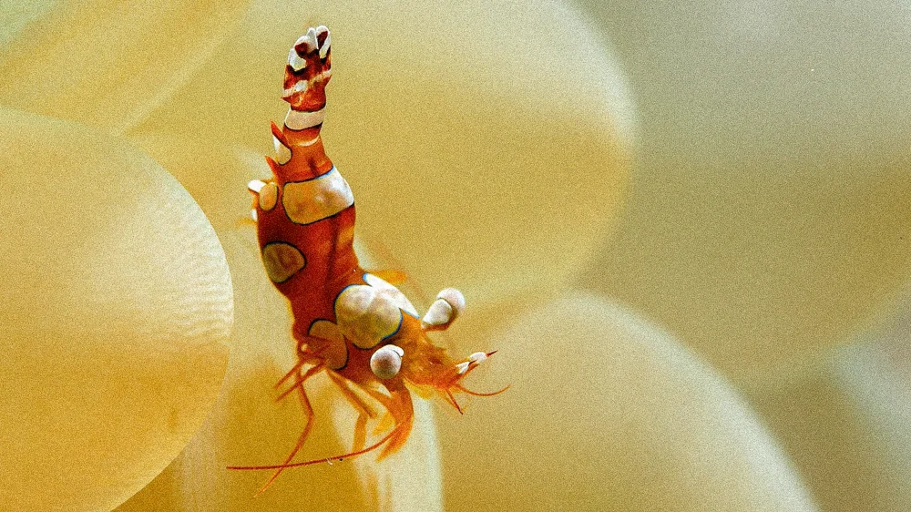
The Island That Was Assembled
Sulawesi looks like nothing else on the map, and the reason is that it is not one island but several welded together. The western arm was once attached to Borneo and to Asia, and the eastern and southeastern arms are fragments that broke away from Australia and New Guinea. And drifted west over millions of years until they collided with the rest and stopped. The seam runs through the middle, and it is visible in the rock and even more so in the life. Add to that a long isolation from everything around it, and you get what biologists treat as one of the finest natural laboratories on earth. Even by the standards of Wallacea, the zone between two continents where nothing belongs wholly to either, Sulawesi is exceptional.
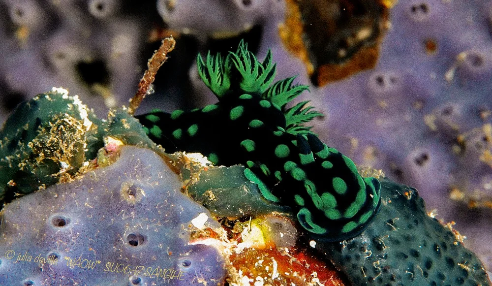
Sulawesi
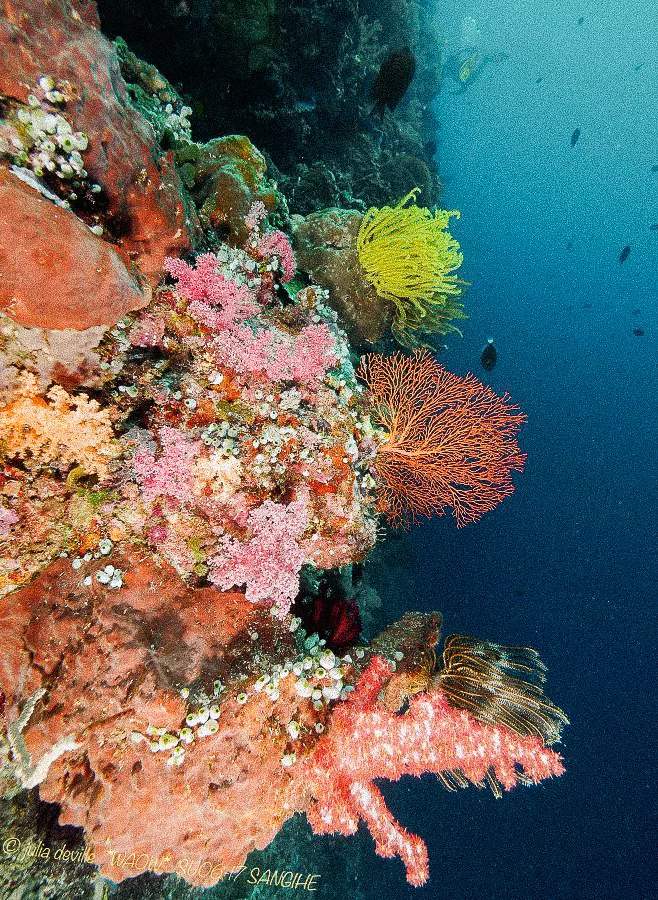
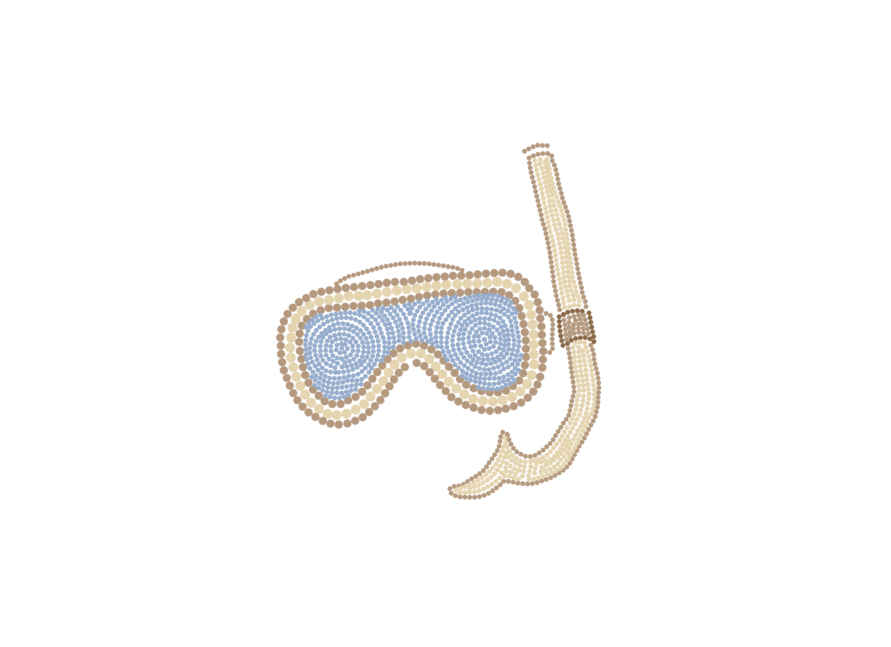
Very few regions offer this much range. Walls and drop-offs, atolls standing in open water, pinnacles where the fish pile up, hard coral gardens in bright shallow water, black sand slopes with the whole strange catalogue of critters on them, a volcano you can dive, and wrecks. Whales, dolphins and reef sharks are part of the picture in the north, and the visibility in the south and southeast is among the best in Indonesia. It is not a destination so much as a shelf of them.
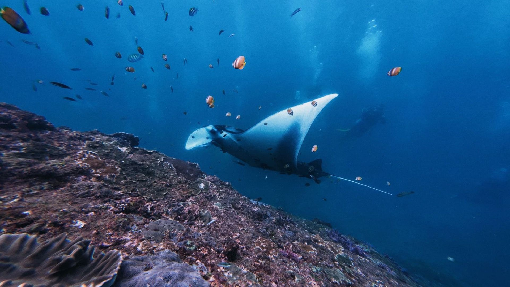
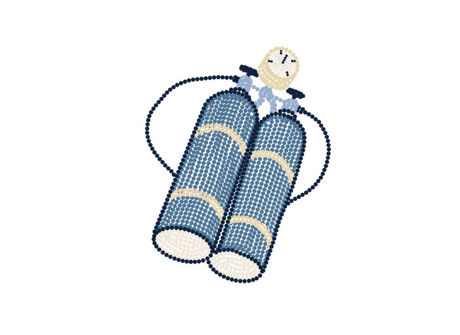
Animals Found
Nowhere Else
The babirusa, a wild pig whose upper tusks grow through the roof of its own snout. The anoa, a dwarf buffalo the size of a large dog. Tarsiers, primates that fit in a fist with eyes too big for their heads, emerging from their fig trees at dusk. Black crested macaques with punk haircuts and no fear of people whatsoever. And the maleo, a megapode that buries its enormous eggs in sand heated by volcanic ground and leaves them to incubate on their own. The great majority of Sulawesi's mammals live here and nowhere else, and the same principle runs into the water, where the Banggai cardinalfish, a small striped fish hovering among sea urchin spines, occurs naturally in one small archipelago and in no other place on the planet.
book your stay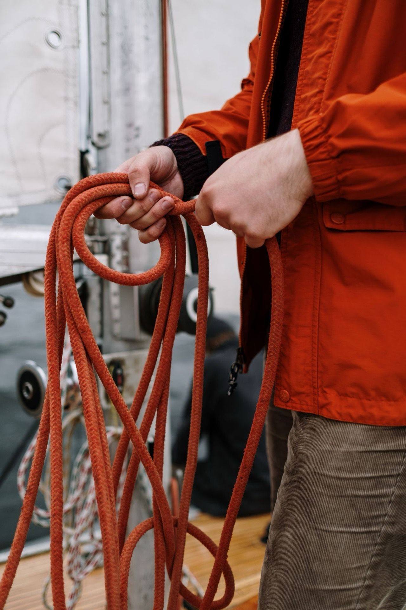
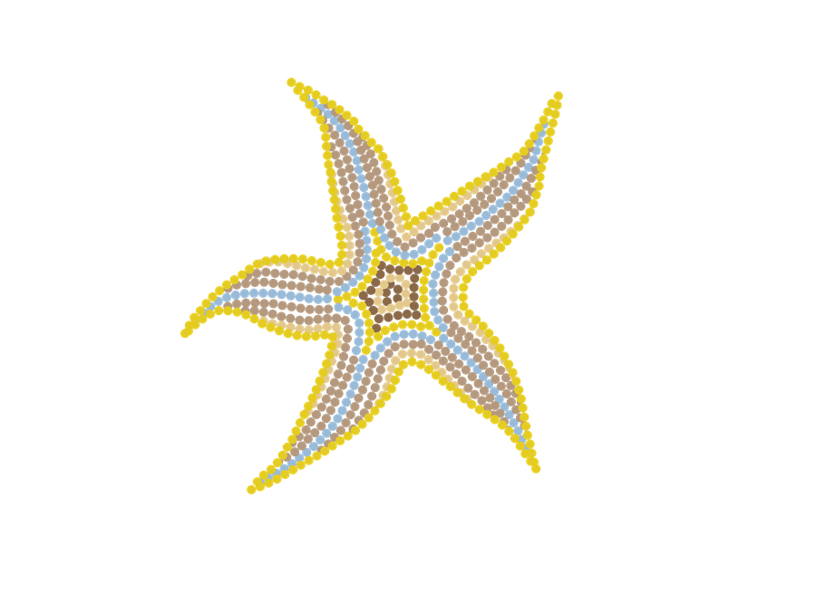
A Region,
Not a Destination
Sulawesi is enormous, and the diving changes completely depending on where you are. In the far north, Talaud is effectively unexplored, and the Sangihe chain running down towards Manado includes Mahengetang, where an active submarine volcano called Banua Wuhu sits a few metres below the surface and sends gas up through black sand in columns you can lie in. Bunaken has its famous walls and its turtles, the old giants that sit on the reef and ignore everybody. Lembeh Strait needs no introduction to anybody who shoots macro and takes some explaining to everybody else. Gorontalo has a wall where the sponges steal the show, including an enormous patterned one named after Salvador Dali that grows there and almost nowhere else. The Togians hold volcanic reefs, atolls, marine lakes and a wartime bomber lying intact in shallow water. Around Banggai there are fishy, seldom dived reefs with the cardinalfish in the shallows and serious soft coral further out. And in the far south, Wakatobi sits on twenty five separate reef systems in water that goes on and on, because almost no rivers run off that limestone and almost no sediment reaches the sea.
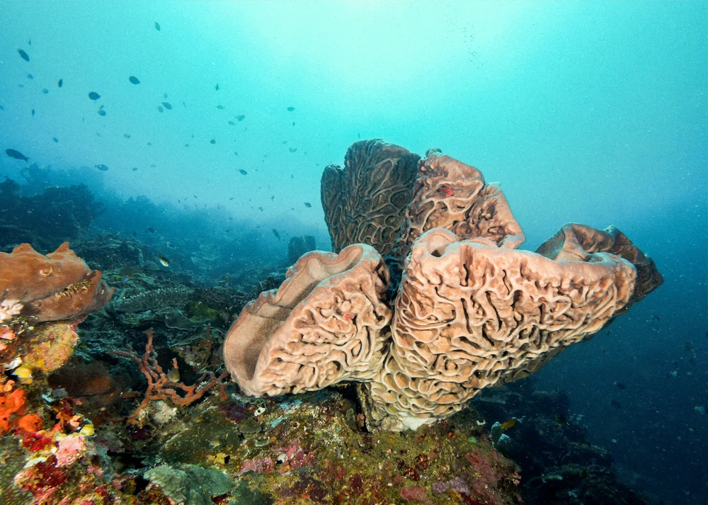
Many Peoples, One
Coastline After Another
Sulawesi holds a great number of distinct cultures, some closely related, others with almost nothing in common. The Toraja in the highlands are known for funerals that last for days, cliff graves and houses with roofs like ships. The Makassar and Bugis kingdoms of the south were the maritime powers of this part of the world, and Bugis sailors were and are the finest seafarers in the archipelago, traders who ranged to Australia and Madagascar, and occasionally something closer to pirates, which is probably why English picked up the word bogeyman. Bugis society recognises five genders rather than two, including the bissu, ritual specialists who belong to none of the conventional categories and who still officiate at ceremonies today.
Older animist traditions sit alongside Islam and Christianity across the island.
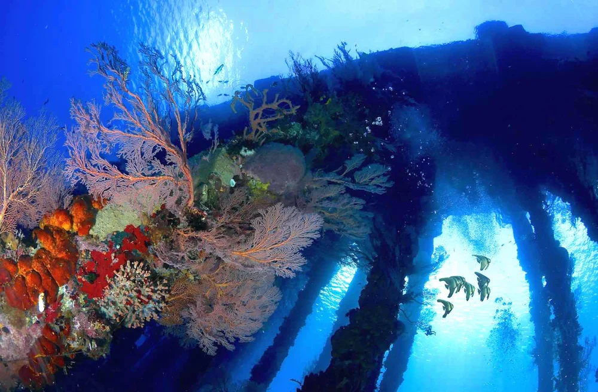
The Sea People
The Bajau have lived on and above this water for centuries, in villages built on stilts over the reef flats with no land beneath them, and generations of free diving have left a physical mark: Bajau divers carry unusually large spleens, an inherited adaptation that helps them stay down longer. On Buton there are families whose eyes are a startling pale blue, the result of a genetic condition that runs in the community. And in Manado the local dive guides have a reputation for spotting things on black sand that nobody else can see at all, which is less an adaptation than a professional deformation.
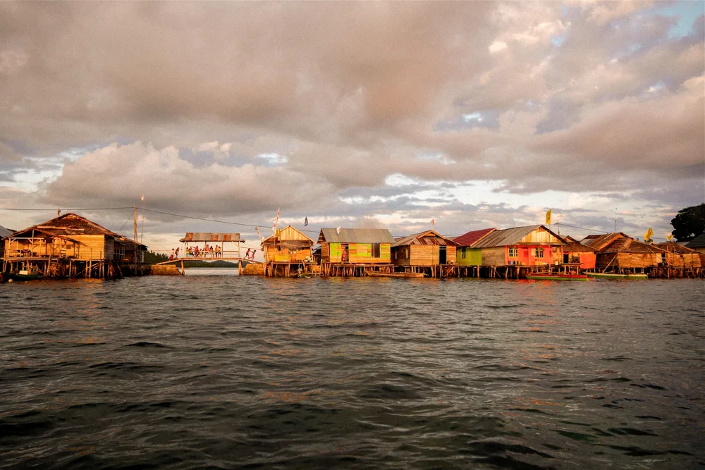
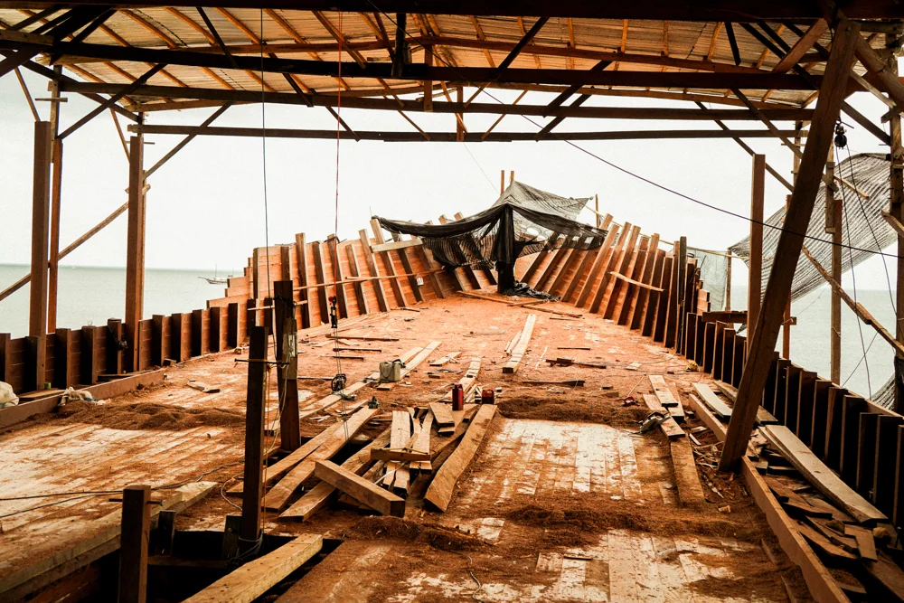
Why This Region
Matters to Us
WAOW 2 was built here. The hull was laid down on the south coast, in the boatyards where the phinisi was invented and where the same families have been building them for generations, using timber from the forests behind the beach and techniques recognised by UNESCO as part of the world's cultural heritage. Every plank of this boat came out of Sulawesi, shaped by people who learned the trade from their fathers. That is not a marketing line. It is why the region feels different when we sail back into it.
Explore other regions
Five ways.
One very big sea.


Ready for your next descent?
More than ten different ways into Indonesia.
And an entire world below the surface.